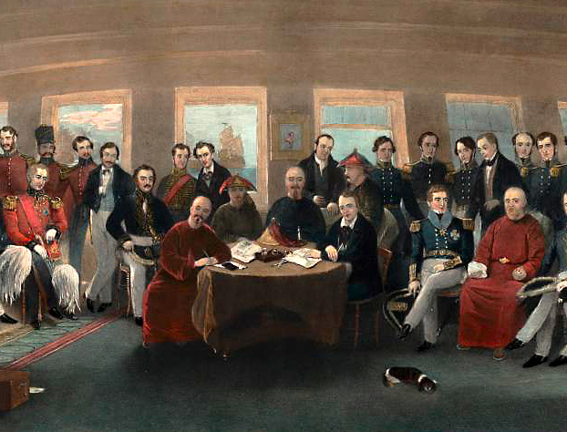
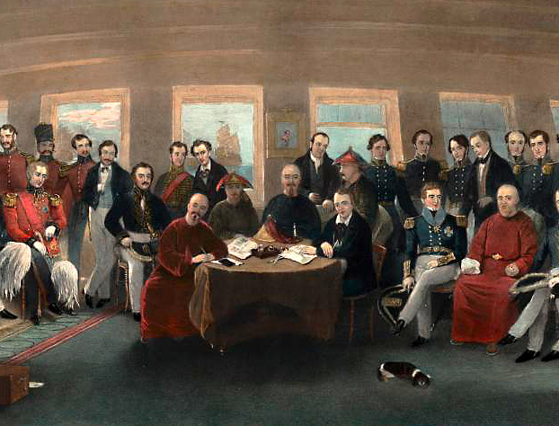
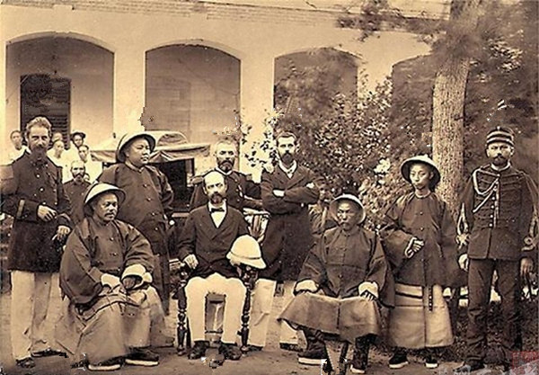
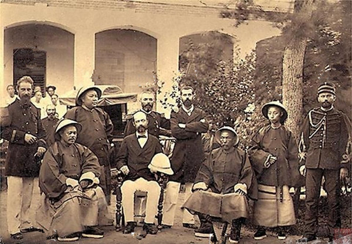
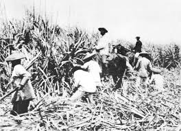
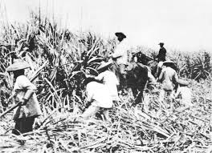

This map begins in the 1840s. In the coming years China's economic, political, and social spheres would all begin to be impacted by gunboat diplomacy.
The Treaty of Nanjing
After China's defeat in the Opium Wars in 1842, this treaty was one of the first of many "unequal treaties" that would be signed between China and the Britain or the United States. China was forced to make immense concessions in the name of so-called diplomacy.
The concessions that China would make include the following changes:
- Opening five Chinese cities to British trade
- Paying war indemnities to the British empire
- Releasing of imprisoned British subjects
- Eliminating phrases Britain deemed derogatory
- Abolishing any system that restricted British merchant activity in China
 

 

 
